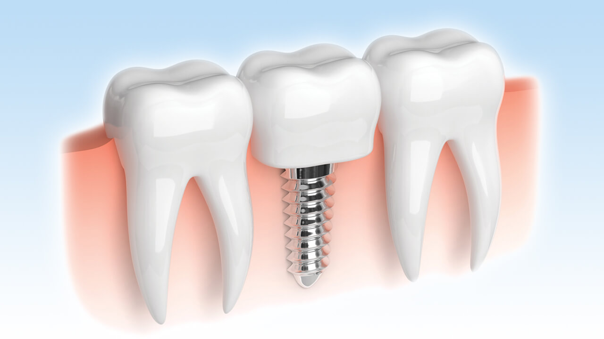
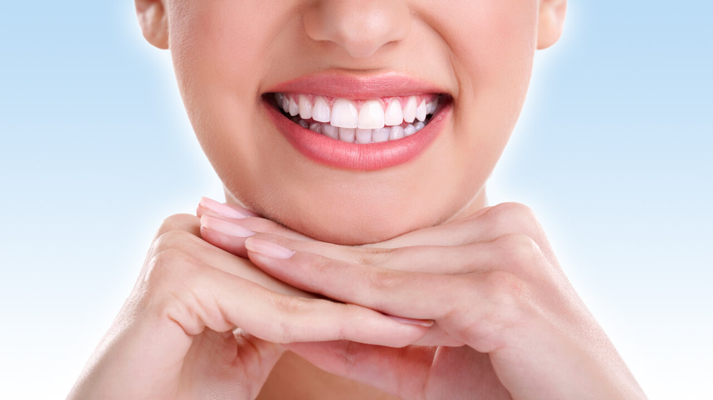
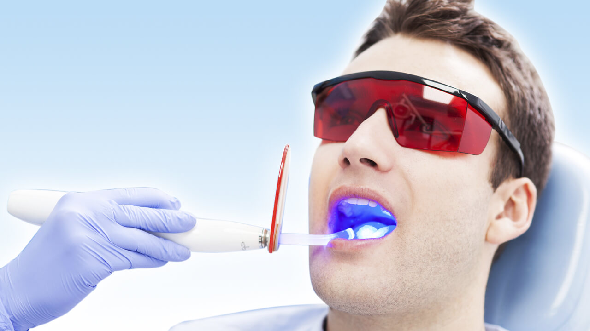
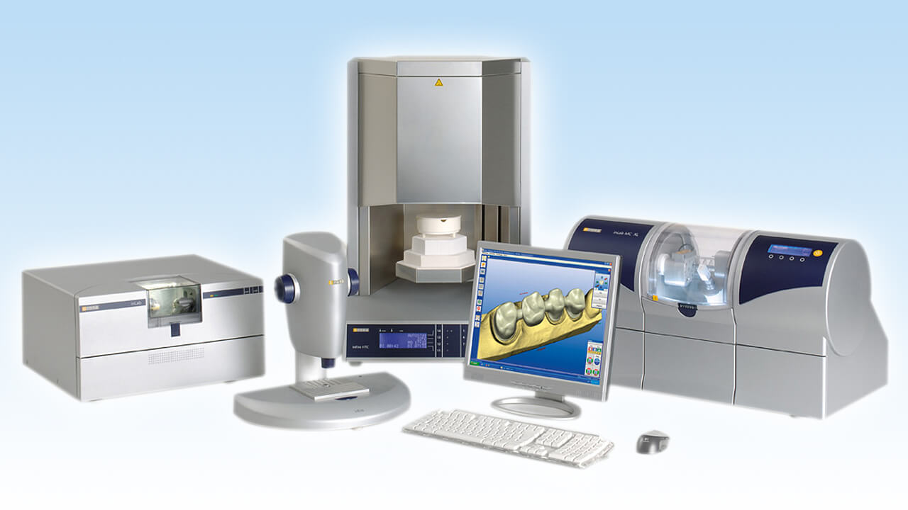
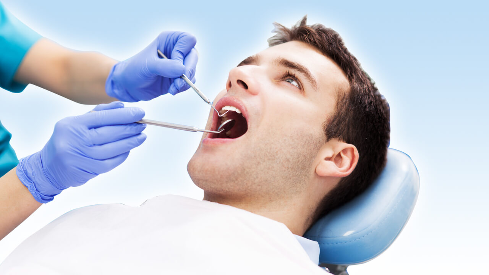
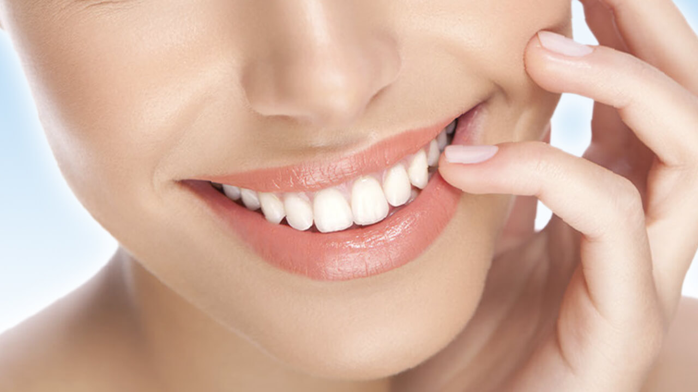
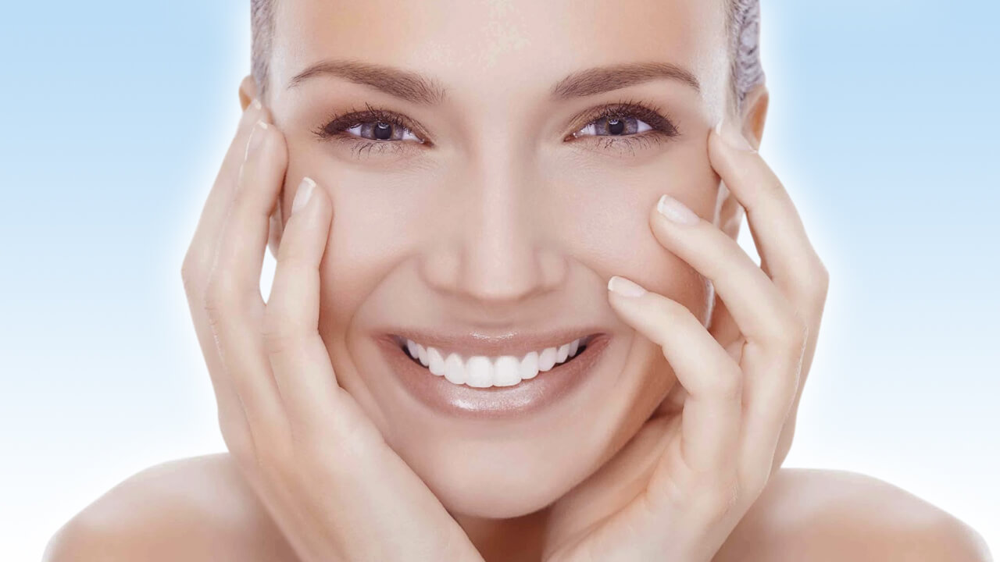
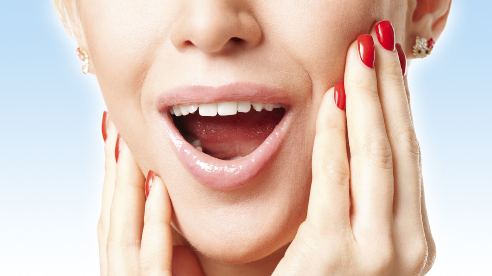
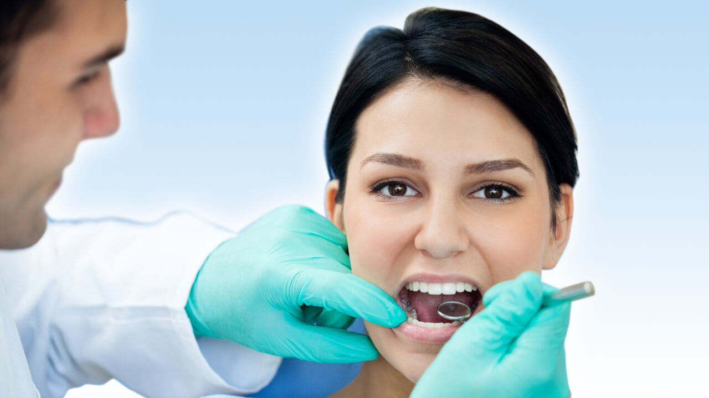

Oral and Dental Health Clinic
Aesthetic Dentistry
Cavities as well as worn, stained, broken, crooked, small/short and irregularly spaced teeth as well as badly-shaped, asymmetrical and crowded teeth...

More information
Dental Implants
The loss of the front teeth, an integral aspect of facial aesthetics, can cause mental, social and speech problems. Loss of the rear teeth...Teeth Whitening
Teeth whitening involves bleaching stained teeth to restore them to their natural, pearly appearance. This is achieved by using whitening jells...
Orthodontic Treatment
Orthodontics is a branch of dentistry concerned with the prevention, diagnosis and treatment of irregularities in the jaw and teeth..Porcelain Laminates
Porcelain laminates are thin veneers ranging from 0.3-0.7mm in thinness that are applied to the front surface of the teeth. These translucent...Zirconia Porcelain Crowns
Classic porcelain crowns use a metal base which means a more opaque and artificial-looking crown covering is needed. From an aesthetic...Composite Restorations (White Fillings)
Composite fillings (white light fillings – composite restorations) use a halogen or LED light source to harden the composite materials used in white...

More information
Gapped Teeth (Diastema) Treatment
Jaws and teeth that are not proportional in size. Cases where the jaws are larger or the teeth smaller cause gapped teeth...

More information
Laser Dentistry
Lasers are widely used in dentistry as they make it possible to treat the teeth and gums without having to physically touch them, making the patient...

More information
CAD/CAM Dentistry
As with other area of life, technological advances and innovations continue to bring greater ease to dentistry. Computer aided design and...

More information
Root Canal Treatment
Root canal treatment (endodontic treatment) is a treatment method for teeth where decay has spread to the pulp located in the very middle of the...Pediatric Dentistry
Pediatric dendistry is concerned with the health of children’s milk teeth. A dentist dealing with this branch of dentistry is known as a pedontist...

More information
Healthy Teeth and Gums
Dentistry involves the maintenance of oral hygiene and health, diagnosis, treatment planning and all the stages necessary to achieve definite results...

More information
Gum Diseases and Treatment
The most common gum complaint is gingivitis where the gums have become infected. This occurs in cases of poor oral hygiene habits and show the...Peridontitis
Periodontitis is a serious gum infection where the soft tissue surrounded the teeth is damaged and which destroys the bone that keeps your teeth in...

More information
Lower Jaw Joint Treatment
Treatment for TMJ problems happen after detailed investigation of the joint and surrounding muscles. Night splints and physical therapy are the main...Bad Breath (Halitosis): Causes and Treatments
To diagnose what type of bad breath you have your dentist will ask you to close your mouth and breath from your nose. If a person can smell your...

More information